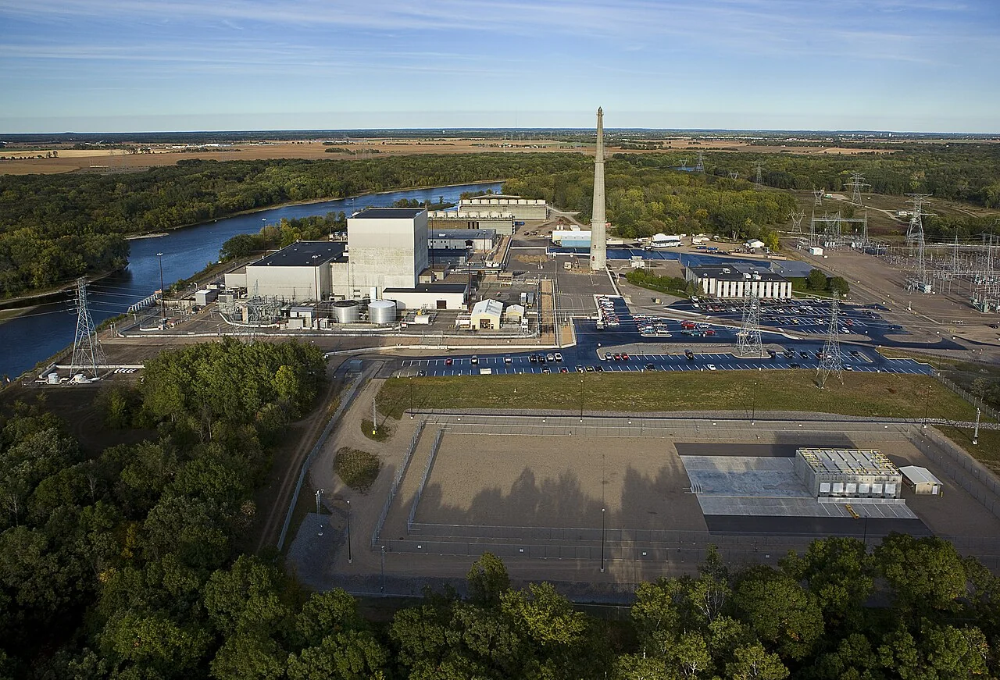
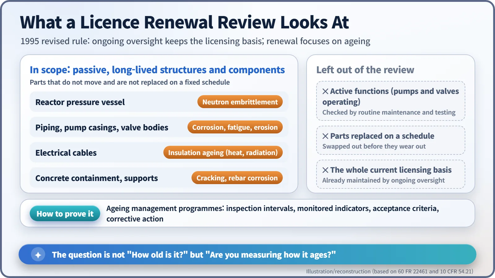
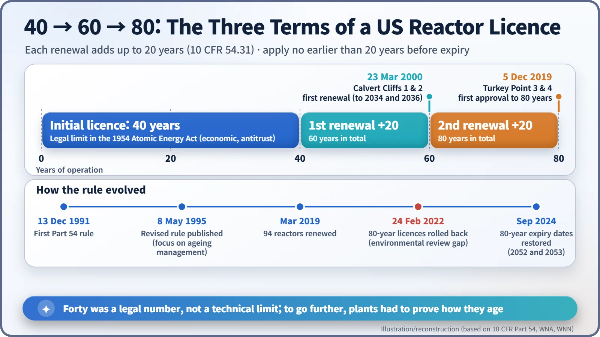
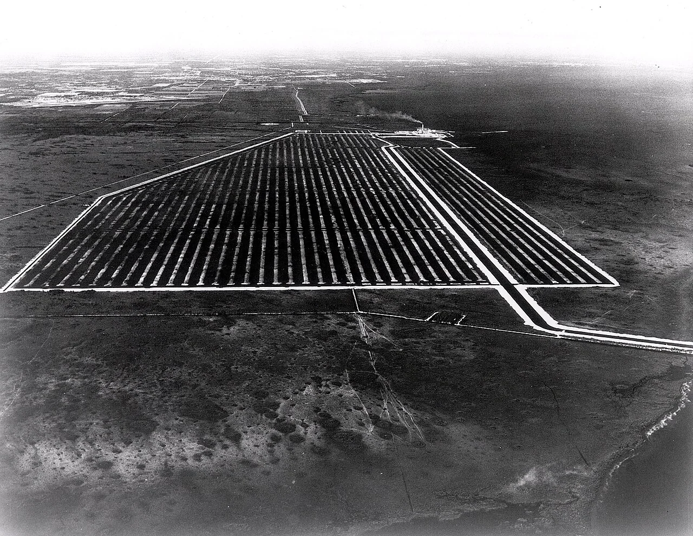

Nuclear History · 271
Forty Years Was a Legal Number, Not a Technical One — The Birth of Nuclear Licence Renewal
A licence term chosen for economic and antitrust reasons became, through two rules and a long review, a question of how well a plant's ageing is measured and managed.
The 40-year term on a US reactor operating licence was set by the Atomic Energy Act of 1954 for economic and antitrust reasons, not because reactors wear out at forty. Turning that legal number into a renewable one took the NRC two rules (1991 and 1995), a first renewal at Calvert Cliffs in 2000, and, for 80-year licences, a reversal and restoration between 2022 and 2024.
The licence's forty years and the steel's forty years are not the same
Imagine that every American nuclear plant had simply switched off on the date printed on its operating licence. Dozens of units that started up in the 1970s would have gone dark, one after another, in the 2010s. Not because their steel had suddenly worn out, but because a piece of paper had run out.
Under the Atomic Energy Act of 1954, a commercial operating licence runs for a term "not exceeding forty years", and it may be renewed. The US Nuclear Regulatory Commission (NRC) explains that the forty-year figure was not a technical limit but came from economic and antitrust considerations, closer to a period for recovering investment than to any estimate of how long a reactor could last. The Act allowed renewal, but nobody had written down how a renewal would actually be reviewed. [3]
Both pilot plants drop out
In the late 1980s the Department of Energy (DOE), the Electric Power Research Institute (EPRI) and the NRC picked two "lead plants" to work out a renewal process: Monticello, a boiling water reactor in Minnesota, and Yankee Rowe, a pressurised water reactor in Massachusetts. [6]

Neither made it to the finish line. Amid a dispute over its reactor pressure vessel, Yankee Rowe shut down on 1 October 1991 and its owners announced permanent closure the following year. Monticello's owner told the NRC it was putting its renewal effort on hold. So when the NRC issued its first licence renewal rule, 10 CFR Part 54, on 13 December 1991, there was no plant left to try it out. [1] [6]
Don't re-argue everything
The 1991 rule was broad and vague. It asked utilities to identify "age-related degradation unique to license renewal" and pulled in the plant's entire current licensing basis. Few volunteered to go first.
The NRC rewrote the rule and published the revision in the Federal Register on 8 May 1995 (in force from 7 June). Its first principle was that the existing regulatory process is adequate to ensure that the licensing bases of all operating plants keep an acceptable level of safety. Day-to-day operation was already under oversight, so renewal could concentrate on ageing. In the rule's own words: "Only passive, long-lived structures and components are subject to an aging management review for license renewal." [1]
Ageing here means materials slowly losing strength over time. A pressure vessel becomes more brittle under neutron bombardment; pipes accumulate corrosion and fatigue; cable insulation stiffens under heat and radiation. By contrast, the working of pumps and valves is checked through routine maintenance and testing, and parts replaced on a fixed schedule were also left out. Think of it as a vehicle inspection that ignores the oil-change interval and instead measures how far rust has crept into the chassis. [2]

Each renewal adds at most 20 years, an application may be filed no earlier than 20 years before the licence expires, and a renewed licence can itself be renewed again. [2]
March 2000: first through the door
The first to go through the process was Calvert Cliffs Units 1 and 2 in Maryland, pressurised water reactors that entered commercial service in 1975 and 1977. The owner spent about ten years and $20 million preparing. On 23 March 2000 the NRC commissioners voted unanimously to approve a 20-year extension, allowing the units to run to 2034 and 2036. [4]
The owner was delighted; critics were not. Stephen Kohn of the National Whistleblower Center said: "Major issues of public health and safety have not been adequately addressed." David Lochbaum of the Union of Concerned Scientists remarked: "We always knew what the decision would be, we just didn't know when it would be announced." Renewals spread quickly after that. By March 2019 some 94 US power reactors had received renewed licences, several of which have since shut down. [4] [3]

Eighty years, granted, withdrawn and restored
On 5 December 2019 Turkey Point Units 3 and 4 in Florida became the first reactors approved for a second, "subsequent" renewal, allowing up to 80 years of operation. On 24 February 2022, however, the Commission reversed itself. Acting on petitions from environmental groups, it found that the generic environmental impact statement used for renewals "did not specifically cover" the extra period beyond 60 years. The expiry dates went back to 2032 and 2033. Only after a supplemental environmental review were they restored, as reported in September 2024, to 19 July 2052 and 10 April 2053. The episode showed that environmental review is as much a part of renewal as the safety review. [5]

A lifespan set by measurement, not the calendar
Not every country puts an expiry date on a reactor licence. Many instead require a periodic safety review, typically every ten years. In South Korea, Kori Unit 1 reached the end of its 30-year design life, was approved in 2007 for ten more years of "continued operation", and shut down permanently on 18 June 2017.
Opinions on life extension remain divided. Supporters argue that running existing plants longer is economical and low-carbon; sceptics ask how much confidence an ageing plant can really earn through review. What the past three decades did settle is this: a reactor's lifespan is not decided by the calendar, but by how carefully its ageing is measured and managed.